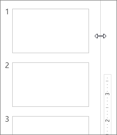
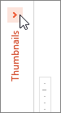

On the PC and on macOS, the width of the slide thumbnail pane in PowerPoint is adjustable. Whether you are editing slides in the Slide pane, working with slide thumbnails, or creating an outline for your presentation, you can easily maximize your working space. You can show or hide, or narrow or widen, the pane that contains the thumbnail views of your slides.
In PowerPoint for the web, slide thumbnails are always available in a fixed-width pane on the left side of the browser window.
When the slide thumbnails on the left are hidden or in a narrowed position, do the following to show or widen them:
On the View tab, in the Presentation Views group, click Normal.
Point to the splitter bar between the Slide pane and the thumbnails, and then drag the splitter bar to the right.

If the thumbnails are hidden, you will see a collapsed Thumbnails menu; click it to show slide thumbnails again.

To maximize your editing space in the Slide pane, you can hide or narrow the slide thumbnails on the left.
On the View tab, in the Presentation Views group, click Normal.
Drag the splitter bar to the left until the slide thumbnails are the size you want, or until they are completely hidden.